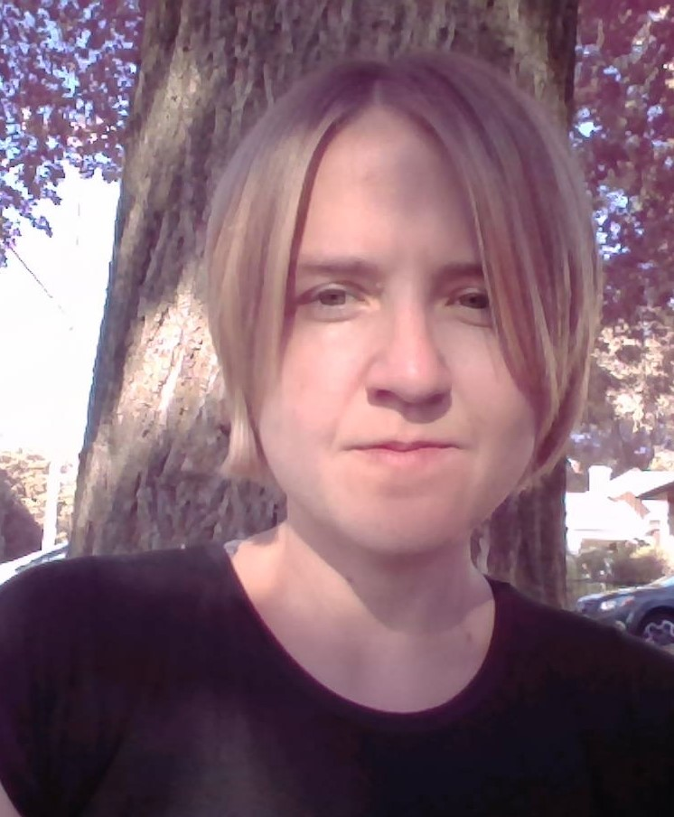

Carolyn Michael
About Me
Born in rural Virginia and raised on land that her ancestors purchased in the 1800’s, Carolyn did not foresee leaving her large family and living 2,100 miles from home. However, in 2002 she was given the opportunity to move to Utah and fell in love with both the state and the feeling of exploration. Carolyn has spent the time since discovering new places, friends, and interests. She returned to Virginia to complete her degree, graduating from Bridgewater College in 2009 with a bachelor’s in Business Administration and a concentration in Accounting. She worked as an accountant in the aviation field before returning to Utah in 2013. Always willing to learn new skills, Carolyn accepted a position as a Compounding Pharmacy Technician and despite being unfamiliar with pharmacy is now a lab supervisor. In her free time, she enjoys talking with friends and family, reading, camping, and trail running.